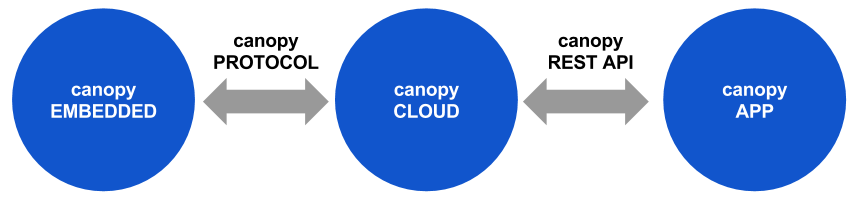

An open source
platform for the
Internet of Things.
platform for the
Internet of Things.
The next billion devices to join the Internet won't be PCs, tablets or
smartphones. Instead they'll be household appliances, motor vehicles,
industrial machines, environmental sensors, and even fashion
accessories. The Internet of Things is the next big technological
revolution and it will forever change the way we interact
with our surroundings.
This revolution is too important to be based on proprietary platforms and corporate agendas. That is why we are working night and day to create an open platform, along with open standards, to power this movement.
Yes, we have lofty goals and a long journey ahead. But we need to begin somewhere, and canopy is that beginning.
This revolution is too important to be based on proprietary platforms and corporate agendas. That is why we are working night and day to create an open platform, along with open standards, to power this movement.
Yes, we have lofty goals and a long journey ahead. But we need to begin somewhere, and canopy is that beginning.
Our Worldview
We think about real-world "smart" objects abstractly as collections of sensors and controls.|
|
A sensor corresponds to a piece of
information the object can tell us about, such as the
ambient temperature, its GPS coordinates, or how many
belgian waffles it has made to date.
canopy takes care of efficiently storing this sensor data as it changes over time, and makes it fast and easy to retrieve the data and present it in graphical form. |
|
A control is any setting or
property that can be changed remotely. For example,
the darkness level on a smart toaster is a control.
Triggerable actions, such as honking a car's horn or closing
your garage door, are also considered controls. canopy exposes an object's controls to the web via a REST API. Additionally, canopy's default frontend presents the user with an intuitive control panel for each device that can be customized by the device's manufacturer. |
|
Components
canopy is open source and modular, so OEMs can choose to leverage as much or as little of the platform as suits their unique needs.
Code Projects
|
canopy EMBEDDED
contains libcanopy, written in C. It provides hooks for custom
data gathering, configuration, and control specific to your device.
It communicates with canopy
CLOUD over secure websockets for high
performance and security.
Source code on Github. View tutorial. View documentation. Status: Under construction |
canopy CLOUD
is a
server-side application that exposes a REST API for remotely
managing smart devices. The canopy
CLOUD stores time-series and event-based data obtained from
the sensors on your device, for visualization and analysis. It
also has a powerful rule engine. The canopy CLOUD is written in golang, uses
cassandra for data storage, and communicates with devices over
websockets.
Source code on Github. View tutorial. View documentation. Status: Under construction |
canopy APP
is a frontend to canopy
CLOUD for the web and mobile web. It provides an
easy-to-use interface for remotely managing your smart
devices, visualizing sensor data, creating rules, and
connecting the output of one device to the input of
another. The canopy APP is
written entirely in javascript and HTML.
Status: Under construction |
Standards and Protocols
|
SDDL
is our Smart Device Description
Language. SDDL is a
simple JSON-based file format that describes the sensors and
controls on your device. This description data is used by
other components of canopy to
automatically generate input validation code and UI controls.
View draft specification |
canopy PROTOCOL
is the open protocol used for communications between canopy EMBEDDED and canopy CLOUD.
View draft specification |
canopy REST API
is the open REST API used for communications between the
canopy CLOUD and canopy APP. Because this API is
published and open, alternative frontends can be created
for canopy and canopy's capabilities can be used
directly by other services and tools.
View draft specification |
Get Involved
If you're as excited about this vision as we are, then help make it a
reality. Here are some ways you can get involved:I'm just interested in following the progress of this project.
Join our mailing list.
Participate in our online forum.
I'm a coder
Read up on our software architecture.
View open bugs and tasks
Join the developer's mailing and let us know that you'd like to help
Email us at sw@canopy.link
I'm a designer
Join the design mailing list and let us know that you'd like to help
Email us at design@canopy.link
I'm in business (or business school)
Shoot us an email at biz@canopy.link
I want to help sponsor this project
You're awesome!
Send us an email at sponsor@canopy.link